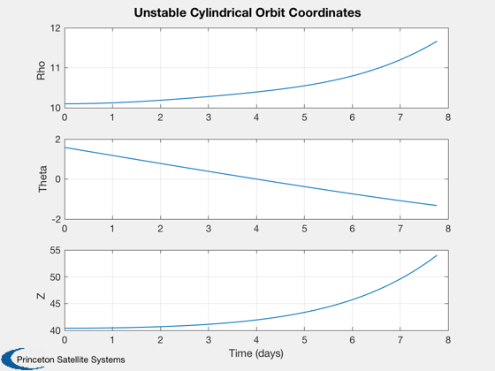
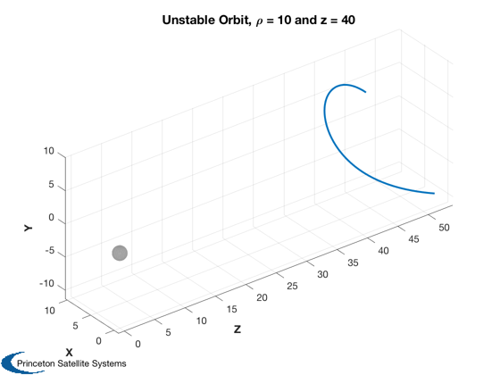
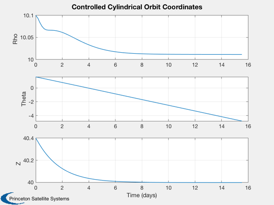
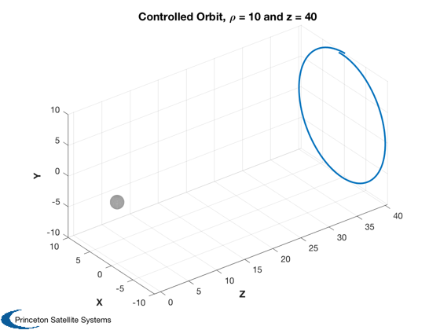
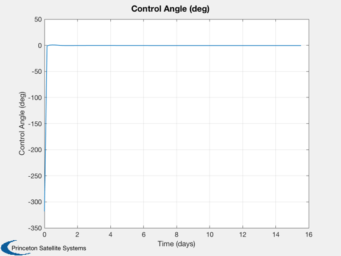

Simulate a non-Keplerian orbit in a cylindrical planet-centered frame.
The sail enables an orbit about a point in the anti-sun direction. The orbit period is chosen to be the same as a Kepler orbit of radius r.
The initial orbit is unstable. A quadratic regulator in pitch is the added to control the orbit.
Since version 7. ------------------------------------------------------------------------ Reference: Colin R. McInnes, "Solar Sailing: Technology, Dynamics and Mission Applications", Springer-Praxis, London, 1999, Fig. 5.18 on p. 207 ------------------------------------------------------------------------ See also NonKeplerianPlanet., QCR, S2Damp, Constant, InformDlg, Plot2D, Plot3D, TimeLabl, Accel, FPlanetControl, FRotatingPlanet, VarEqSailPlanet, Cyl2Cart ------------------------------------------------------------------------
Contents
%------------------------------------------------------------------------------- % Copyright (c) 2007 Princeton Satellite Systems, Inc. % All rights reserved. %------------------------------------------------------------------------------- rho0 = 10; z0 = 40; R0 = sqrt(10^2+40^2); w0 = R0^(-3/2); % Initial conditions r0 = [rho0;pi/2;z0]; dR = 0.01*r0; % Target period is 15.51 days [pitch0,accel] = NonKeplerianPlanet( rho0, z0, w0 ); % Orbit period in dimensionless units mu = Constant('mu earth'); rE = Constant('equatorial radius earth'); wP = sqrt(mu/rE^3); P = 2*pi/w0; P0 = 2*pi/wP; accel0 = accel*mu/rE^2; fprintf('Sail acceleration is %0.5f mm/s2\n',accel0*1e6); % ODE options opts = odeset('abstol',1e-12,'reltol',1e-8); % Verify time units with sail off if 0 [tOut,z] = ode113( @FRotatingPlanet, linspace(0,2*pi,100), [1;0;0;0;1;0], opts, pitch0, 0 ); Plot2D(tOut',z(:,1:3)','Time',{'Rho','Theta','Z'},'Circular Orbit'); Plot3D(Cyl2Cart(z(:,1:3)')); return; end
Sail acceleration is 5.59160 mm/s2
Initially sail attitude is fixed in rotating frame
%--------------------------------------------------- % Time, 1/2pi radius orbits nOrb = 0.5; t = linspace(0,nOrb*P,100); hDlg = InformDlg( 'Integrating...', 'NKPlanetSim' ); [tOut,z] = ode113( @FRotatingPlanet, t, [r0+dR;0;-w0;0], opts, pitch0, accel ); close(hDlg); [tPlot,tL] = TimeLabl(tOut'*P0/2/pi); Plot2D(tPlot,z(:,1:3)',tL,{'Rho','Theta','Z'},'Unstable Cylindrical Orbit Coordinates'); % View in 3D (Cartesian) xCart = Cyl2Cart( z(:,1:3)' ); Plot3D(xCart([3 1 2],:),'Z','X','Y','Unstable Orbit, \rho = 10 and z = 40',1) axis tight view(3) 
Generate a pitch controller using QCR (wil be PD control)
%---------------------------------------------------------- % Compute state space plant a = VarEqSailPlanet( rho0, z0, w0 ); % Compute input matrix for pitch control K1 = accel*cos(pitch0)^3*(1-2*tan(pitch0)^2); K2 = -3*accel*cos(pitch0)^2*sin(pitch0); A = [zeros(2,2) eye(2); -a zeros(2,2)]; B = [0;0;K1;K2]; kR = QCR( A, B, diag([4 4 1 1]), 1 ); % compute eigenvalues of a - b*k e = eig( A - B*kR ) % verify damping ratio [zeta, w] = S2Damp( e ) % Initial cut (q = I, r = 1), less damped position and more damped velocity % (over critical damping). After experimentation choose [4 4 1 1]. nOrb = 1; t = linspace(0,nOrb*P,100); [tOut,z] = ode113( @FPlanetControl, t, [r0+dR;0;-w0;0], opts, pitch0, accel, [rho0;z0], kR ); [tPlot,tL] = TimeLabl(tOut'*P0/2/pi); Plot2D(tPlot,z(:,1:3)',tL,{'Rho','Theta','Z'},'Controlled Cylindrical Orbit Coordinates'); xCart = Cyl2Cart( z(:,1:3)' ); Plot3D(xCart([3 1 2],:),'Z','X','Y','Controlled Orbit, \rho = 10 and z = 40',1) axis tight view(3) % Compute applied control thetaC = zeros(1,length(tOut)); for k = 1:length(tOut) dX = z(k,[1 3 4 6])' - [rho0;z0;0;0]; thetaC(k) = -kR*dX; end Plot2D(tPlot, thetaC*180/pi, tL, 'Control Angle (deg)' ) %--------------------------------------
e = -0.023325054347733 + 0.024463387328433i -0.023325054347733 - 0.024463387328433i -0.005192717752450 + 0.000967433742656i -0.005192717752450 - 0.000967433742656i zeta = 0.690067569645679 0.690067569645679 0.983084171017330 0.983084171017330 w = 0.033801116548209 0.033801116548209 0.005282068316772 0.005282068316772  